This section provides complete instructions for
creating color-filled plots in IVE.

Once you have created a color, 2D, scalar plot (see Producing a 2D Scalar Plot), you may control
the color fill options using the "Color Table" menu. From the IVE
Main Window, select "Color Table." This reveals the following
choices: Display Table, Edit Table, New Table,
and Shift Colors.
- Display Table: This command opens the Color Bar Window,
displaying the color table that is currently active in your IVE
session. The Color Bar Window assigns a number to each color, and
is therefore useful for editing color tables. To close the Color
Bar Window, simply click on "Display Table" a second time.
- Edit Table: This choice allows you to edit the active
color table. Upon selecting Edit Table, you are given the two
options: Edit RGB and Edit HSL.
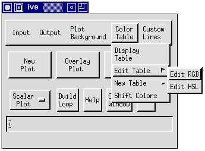
The Edit RGB Popup (below left) allows you to mix colors by
varying the intensity of Red, Green, or Blue. On the other hand,
the Edit HSL Popup (below right) window varies the hue, saturation,
and intensity values.
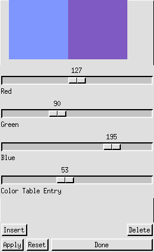 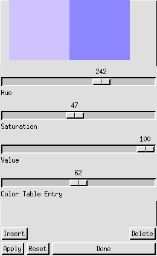
Edit RGB Popup / Edit HSL Popup
You may use either the Edit RGB Popup
or the Edit HSL Popup to create custom color tables. Here's how:
- Using the "Display Table" function, activate the Color Bar
Window. The Color Bar Window assigns numbers to each color in the
table, facilitating the editing process.
- Use the Color Table Entry bar in the Edit Popup to select the
number of the color you wish to edit. Once you have selected a
color, it is displayed in the left half of the palette located at
the top of the Edit Popup. Now, adjust the three mixer bars until
the right half of the palette displays the new color you want.
Click on the "Apply" button to activate the change.
- To delete a color from a color table, make sure that its number
is displayed at the Color Table Entry bar and click once on the
"delete" button.
- If you wish to insert a color, look on the Color Bar Window to
determine the number of the color that is located to the
right of the point of insertion. Use the Color Table Entry
bar in the Edit popup to display this number. Now, mix the new
color and click on the "Insert" button.
- To undo all changes you have made to the active color table,
choose the "Reset" button in the Edit popup.
- Once you finish editing a table, you can save it to your
directory (see WRITECOLORTABLE).
- New Table: The Default Color Table is automatically
applied at the beginning of each IVE session and remains active
until a different table is read. To read a color table, click on
"New Table" in the Color Table menu. This activates the New Table
Menu as shown in the Figure Below:
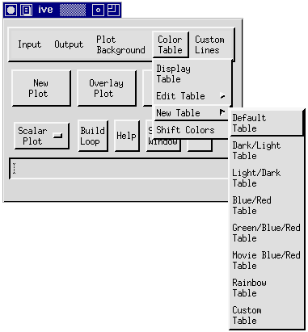
In the New Table Menu, there are
seven IVE color tables. These tables can be used to create either
color or grayscale plots.
- Color Plots
The five color tables available in IVE for creating color plots are
Default, Blue/Red, Green/Blue/Red, Movie Blue/Red, and Rainbow
(shown below).
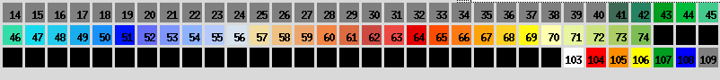
Default Color Table
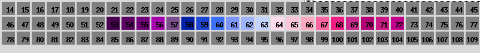
Blue/Red Color Table
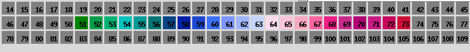
Green/Blue/Red Color Table
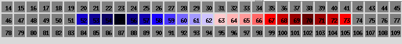
Movie Blue/Red Color Table
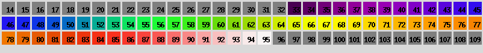
Rainbow Color Table
- Grayscale Plots
The Dark/Light and Light/Dark color tables (pictured below) can be
used to create grayscale plots. However, grayscale plots created
with these color tables often produce low quality photocopies. For
this reason, IVE contains a grayscale stippling option for filling
2D plots (refer to Producing a 2D Scalar
Plot).
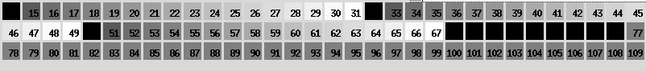
Dark/Light Table
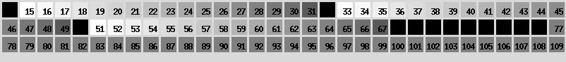
Light/Dark Table
- You may also choose to read a
user-created color table from your directory. To read a custom
color table, simply select "Custom Table" from the New Table Menu.
This activates a widget which allows you to select any color table
of the format *.ctb from your directory (see also READCOLORTABLE).
- Shift Colors: This is the last option in the Color Table
menu. It allows you to vary the color legend by shifting the color
table. For example, if you want negative values shaded blue and
positive values shaded red, the Color Options Window (displayed
below) allows you to slide the color table so that the zero contour
corresponds to the transition between red and blue. To open the
widget, select "Shift Colors" from the Color Table menu.
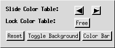
Color Options Window
The following functions are performed
in the Color Options Window:
- Slide Color Table: Click on the left and right arrow buttons to
vary the color legend of the plot.
- Lock Color Table: Once the color table is optimally positioned,
"Lock Color Table" locks the table in place. This is especially
useful for creating successive plots, such as in a loop (see LOCKCOLORTABLE).
- Reset: The "Reset" button slides the color table back to its
original position.
- "Toggle Background" allows you to select either black or white
as a background for your plot.
- Color Bar: If the active color table is not already displayed
at the bottom of your screen, clicking on the "Color Bar" button
activates the Color Bar Window (see the "Display Table" section
above).
{kind=link}
{kind=link}
{kind=link}
{kind=link}
{kind=link}
{kind=link}
{kind=link}
{kind=link}